Što ćeš na kraju imati
Jedan DWG s dva lista i dva PDF-a: list 1 – nosač senzora -B1 u izometriji i kosoj projekciji (1:1); list 2 – čahura kliznog ležaja u punom presjeku i polupresjeku te kraj vodilice s djelomičnim presjekom (2:1). Polaziš od svog crteža iz V1. Ovako izgledaju PDF-ovi:
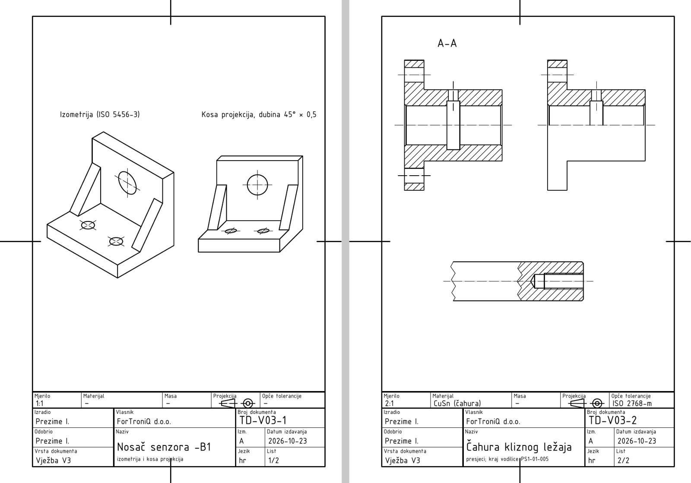
Prije početka pročitaj ovo (2 minute)
- „Klikni“ = jedan klik lijevom tipkom miša. „Upiši“ = tipkaj na tipkovnici.
- Nakon svakog upisa pritisni Enter. U okvirima Upiši uz svaki unos piše Enter – svaki put ga stvarno pritisni.
- Koordinate se pišu X,Y – zarez odvaja X i Y, npr.
210,297. Decimalni broj piše se s točkom, npr.148.5. - Točka
0,0je donji lijevi kut lista. X raste udesno, Y raste prema gore. Sve mjere su u milimetrima. - Pogriješio(la) si? Pritisni Esc (prekida naredbu), a Ctrl+Z poništava zadnju radnju.
- Za ovu vježbu treba ti gotova V1 (list s okvirom, zaglavljem, slojevima i stilom TD_ISO). Ako je nemaš, najprije napravi V1. Postupke iz V2 (kopiranje lista, TEXTEDIT, ispis 2:1) ovdje ponavljamo ukratko.
- Uz svaki korak je kvačica gotovo – označi je kad završiš korak, pa ćeš znati gdje si stao(la).
Ako nešto ne ide
- Piše „Unknown command“ – naredba nije bila pokrenuta. Pritisni Esc, pa ponovno klikni alat (ili upiši naredbu) i tek onda brojeve.
- Ne vidiš što si nacrtao(la) – upiši
ZOOMEnterEEnter. - Crte su na krivom mjestu – provjeri dio B (DYNMODE i OSMODE moraju biti 0) i jesi li pisao(la) točku, a ne zarez, u decimalnom broju.
- Ne znaš gdje si stao(la) – sve koordinate u tablicama su točne; nacrtano usporedi sa slikom koraka. Pogrešnu crtu klikni i pritisni Delete.
- Tekst se ne da kliknuti (TEXTEDIT) – približi ga (ZOOM W) i klikni točno na crtu slova.
- Crta je krive boje ili debljine – bila je odabran krivi sloj. Klikni crtu, pa u popisu slojeva na traci odaberi pravi sloj i pritisni Esc.
Sadržaj
- A. Otvori svoj crtež iz V1 i spremi ga kao V3
- B. Tri postavke na početku
- C. Obriši probu pisma iz V1
- D. Zaglavlje lista 1
- E. Listovi: kopiraj okvir i zaglavlje
- F. List 1 – pomoćni kvadar za izometriju
- G. Izometrija – baza i uspravni dio
- H. Izometrija – rebra
- I. Izometrija – provrti i naslov
- J. Kosa projekcija
- K. List 2 – čahura: osi i obris (mjerilo 2:1)
- L. List 2 – puni presjek: bridovi iza rezne ravnine
- M. List 2 – šrafura i oznaka presjeka
- N. List 2 – polupresjek
- O. List 2 – djelomični presjek
- P. List 2 – zaglavlje
- R. Ispis u PDF
- Z. Spremi, vrati postavke i predaj
AOtvori svoj crtež iz V1 i spremi ga kao V3
1
Pokreni AutoCAD 2027. Na zaslonu Start, pod Recent, klikni sličicu svog crteža iz vježbe 1 (
TD_2026-2027_Prezime_Ime_V01). Ako ga nema, klikni Open… i pronađi ga.

2
Upiši
SAVEAS Enter. U polju File name upiši TD_2026-2027_Prezime_Ime_V03 (svoje prezime i ime) i klikni Save.Upiši:
SAVEAS Enter

Na kartici crteža gore lijevo ime završava s V03. Crtež iz V1 ostao je netaknut.
BTri postavke na početku
3
Upiši redom (nakon svakog Enter):
| Naredba | Vrijednost | Zašto |
|---|---|---|
DYNMODE | 0 | broj koji upišeš znači točno mjesto na listu |
OSMODE | 0 | kursor ne „skače“ na obližnje točke |
GRIDMODE | 0 | nema mreže kvadratića |


CObriši probu pisma iz V1
4
Upiši
ERASE Enter, W Enter, 22,60 Enter, 198,285 Enter, pa još jednom Enter.Upiši:
ERASE Enter W Enter 22,60 Enter 198,285 Enter (Enter)

Proba pisma i pomoćne crte su obrisane, a okvir i zaglavlje su ostali.
DZaglavlje lista 1
5
Približi zaglavlje:
ZOOM Enter, W Enter, 15,5 Enter, 205,60 Enter. Upiši TEXTEDIT Enter i promijeni tekstove (klik na tekst → upiši novi → Enter; na kraju Esc):Upiši:
ZOOM Enter W Enter 15,5 Enter 205,60 Enter TEXTEDIT Enter| Polje | Sada piše (iz V1) | Upiši |
|---|---|---|
| Materijal | EN AW-6082 | – |
| Masa | 0,32 kg | – |
| Opće tolerancije | ISO 2768-m | – |
| Vrsta dokumenta | Radionički crtež | Vježba V3 |
| Naziv | Klizač (saonice) | Nosač senzora -B1 |
| ispod naziva | pozicionirna os PS-1 | izometrija i kosa projekcija |
| Broj dokumenta | PS1-01-004 | TD-V03-1 |
| Datum izdavanja | 2026-10-09 | 2026-10-23 |
| List | 1/1 | 1/2 |
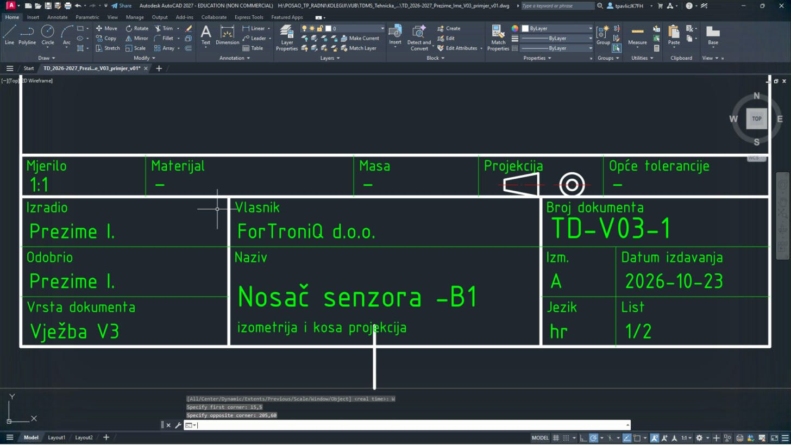
Zaglavlje mijenjaš prije kopiranja lista – tako drugi list već dobije Vježba V3 i datum. Klikni točno na crtu slova; crticu – možeš upisati i kao običnu crticu
-.EListovi: kopiraj okvir i zaglavlje
6
Udalji pogled:
ZOOM Enter, W Enter, -10,-10 Enter, 460,310 Enter. Kopiraj list: COPY Enter, W Enter, -1,-1 Enter, 211,298 Enter.Upiši:
ZOOM Enter W Enter -10,-10 Enter 460,310 Enter COPY Enter W Enter -1,-1 Enter 211,298 Enter

Odabran je cijeli list – 55 found.
7
Enter (kraj odabira), bazna točka
0,0 Enter, druga točka 230,0 Enter, pa još Enter.Upiši: (Enter)
0,0 Enter 230,0 Enter (Enter)8
Drugi list mora biti upola manji jer se ispisuje 2:1 (crtež je u stvarnoj veličini).
SCALE Enter, W Enter, 229,-1 Enter, 441,298 Enter, Enter, 230,0 Enter, 0.5 Enter.Upiši:
SCALE Enter W Enter 229,-1 Enter 441,298 Enter (Enter) 230,0 Enter 0.5 Enter

9
Drugi list je upola manji. Upiši
ZOOM Enter E Enter.Upiši:
ZOOM Enter E Enter
Dva lista: veliki (0–210) i mali (230–335).
FList 1 – pomoćni kvadar za izometriju
10
Nosač senzora (baza 50 × 40 × 8, uspravni dio 8 mm do visine 45, dva rebra 6 mm) crtaš u izometriji: širina ide pod 30° udesno-dolje, dubina pod 30° udesno-gore, visina okomito. Najprije približi lijevi dio lista:
ZOOM Enter, W Enter, 15,115 Enter, 200,235 Enter.Upiši:
ZOOM Enter W Enter 15,115 Enter 200,235 Enter11
Na sloju 09_POMOCNE (ne ispisuje se) nacrtaj kvadar koji obuhvaća cijeli nosač – 12 bridova. Svaki redak tablice je jedna naredba. Upiši naredbu, Enter, pa redom vrijednosti iz retka – nakon svake Enter. Strelica → znači „sljedeća točka“. Kad se u retku promijeni sloj, najprije odaberi taj sloj.
LINE i PLINE bez slova C završi još jednim Enter.| # | Sloj | Naredba | Što upisuješ |
|---|---|---|---|
| 1 | 09_POMOCNE | LINE | 29,151 → 72.3013,126 |
| 2 | 09_POMOCNE | LINE | 72.3013,126 → 106.9423,146 |
| 3 | 09_POMOCNE | LINE | 106.9423,146 → 63.641,171 |
| 4 | 09_POMOCNE | LINE | 63.641,171 → 29,151 |
| 5 | 09_POMOCNE | LINE | 29,196 → 72.3013,171 |
| 6 | 09_POMOCNE | LINE | 72.3013,171 → 106.9423,191 |
| 7 | 09_POMOCNE | LINE | 106.9423,191 → 63.641,216 |
| 8 | 09_POMOCNE | LINE | 63.641,216 → 29,196 |
| 9 | 09_POMOCNE | LINE | 29,151 → 29,196 |
| 10 | 09_POMOCNE | LINE | 72.3013,126 → 72.3013,171 |
| 11 | 09_POMOCNE | LINE | 106.9423,146 → 106.9423,191 |
| 12 | 09_POMOCNE | LINE | 63.641,171 → 63.641,216 |
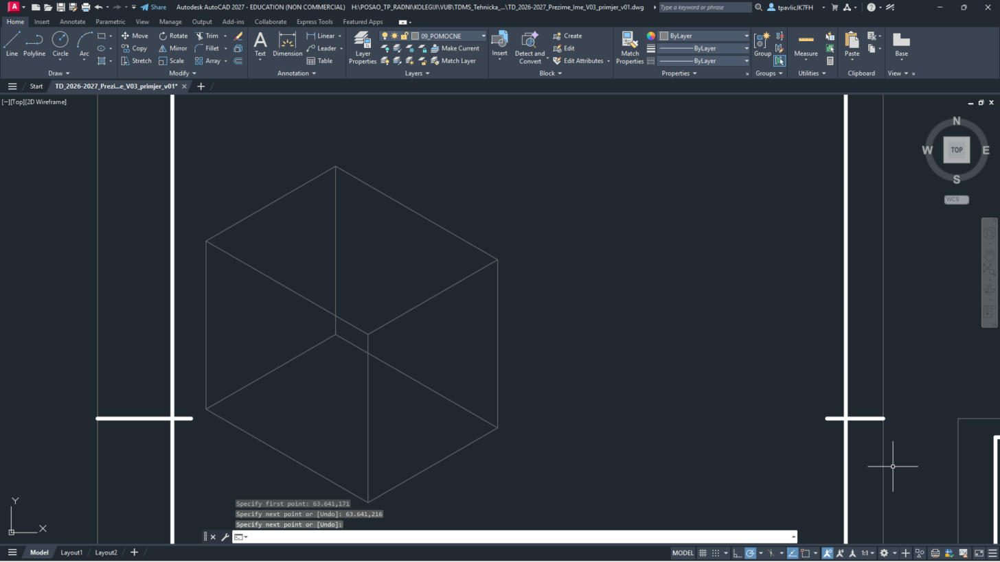
Tanki sivi kvadar: to je „kutija“ unutar koje leži nosač. Sve točke nosača leže na bridovima ili plohama te kutije.
GIzometrija – baza i uspravni dio
12
Na sloju 01_VIDLJIVO nacrtaj vidljive bridove baze i uspravnog dijela:
| # | Sloj | Naredba | Što upisuješ |
|---|---|---|---|
| 1 | 01_VIDLJIVO | LINE | 29,151 → 72.3013,126 |
| 2 | 01_VIDLJIVO | LINE | 72.3013,126 → 106.9423,146 |
| 3 | 01_VIDLJIVO | LINE | 29,151 → 29,159 |
| 4 | 01_VIDLJIVO | LINE | 72.3013,126 → 72.3013,134 |
| 5 | 01_VIDLJIVO | LINE | 29,159 → 72.3013,134 |
| 6 | 01_VIDLJIVO | LINE | 29,159 → 42.8564,167 |
| 7 | 01_VIDLJIVO | LINE | 72.3013,134 → 86.1577,142 |
| 8 | 01_VIDLJIVO | LINE | 106.9423,146 → 106.9423,154 |
| 9 | 01_VIDLJIVO | LINE | 61.909,172 → 86.5907,157.75 |
| 10 | 01_VIDLJIVO | LINE | 56.7128,197 → 56.7128,212 |
| 11 | 01_VIDLJIVO | LINE | 100.0141,172 → 100.0141,187 |
| 12 | 01_VIDLJIVO | LINE | 56.7128,212 → 100.0141,187 |
| 13 | 01_VIDLJIVO | LINE | 63.641,216 → 106.9423,191 |
| 14 | 01_VIDLJIVO | LINE | 56.7128,212 → 63.641,216 |
| 15 | 01_VIDLJIVO | LINE | 100.0141,187 → 106.9423,191 |
| 16 | 01_VIDLJIVO | LINE | 106.9423,154 → 106.9423,191 |
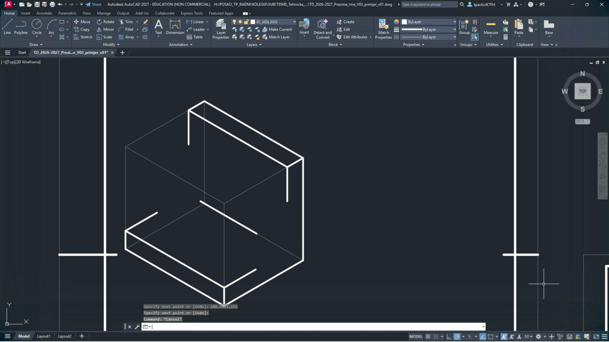
Debeli bijeli obris: baza dolje, uspravni dio straga. Prekidi u crtama su mjesta gdje će doći rebra.
Brojevi s četiri decimale (npr.
72.3013) dolaze od kuta 30°: cos 30° = 0,866. Prepiši ih točno, s točkom.HIzometrija – rebra
13
Dva bočna rebra (debljina 6 mm) spajaju bazu i uspravni dio:
| # | Sloj | Naredba | Što upisuješ |
|---|---|---|---|
| 1 | 01_VIDLJIVO | LINE | 42.8564,167 → 48.0526,164 |
| 2 | 01_VIDLJIVO | LINE | 42.8564,167 → 56.7128,197 |
| 3 | 01_VIDLJIVO | LINE | 48.0526,164 → 61.909,194 |
| 4 | 01_VIDLJIVO | LINE | 56.7128,197 → 61.909,194 |
| 5 | 01_VIDLJIVO | LINE | 80.9615,145 → 86.1577,142 |
| 6 | 01_VIDLJIVO | LINE | 80.9615,145 → 94.8179,175 |
| 7 | 01_VIDLJIVO | LINE | 86.1577,142 → 100.0141,172 |
| 8 | 01_VIDLJIVO | LINE | 94.8179,175 → 100.0141,172 |
| 9 | 01_VIDLJIVO | LINE | 48.0526,164 → 61.909,172 |
| 10 | 01_VIDLJIVO | LINE | 61.909,172 → 61.909,194 |
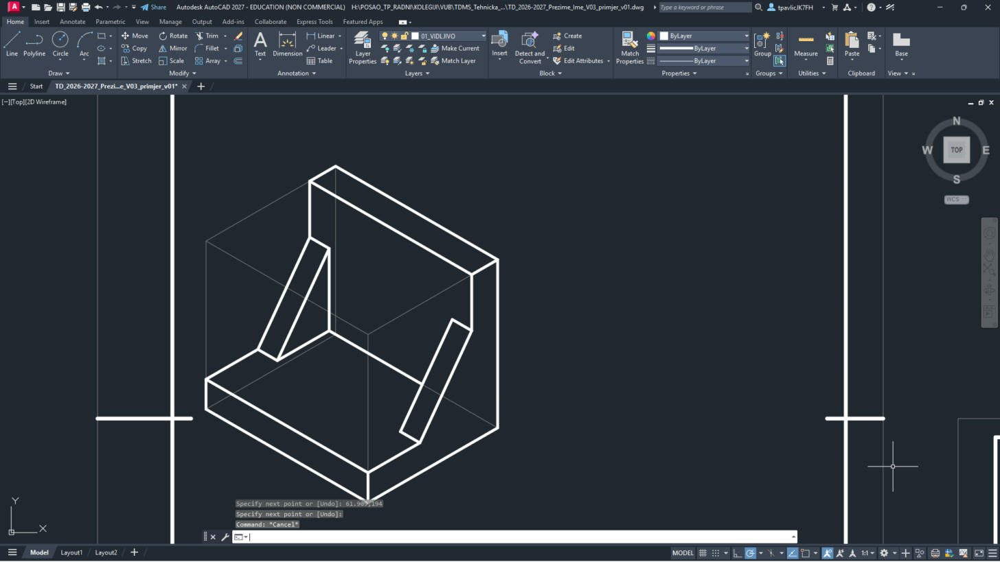
Lijevo i desno kosi „trokut“ rebra, a stražnji brid baze između rebara je sada zatvoren.
IIzometrija – provrti i naslov
14
Kružnica u izometriji postaje elipsa. Provrte crtaš naredbom
ELLIPSE: upiši ELLIPSE Enter, C Enter (središte), pa središte, kraj prve osi i polovicu druge osi. Osi provrta su na sloju 03_OSI, a naslov na 04_KOTE.| # | Sloj | Naredba | Što upisuješ |
|---|---|---|---|
| 1 | 01_VIDLJIVO | ELLIPSE | C, središte 54.1147,158.5, kraj prve osi 58.1564,158.5, pola druge osi 2.3335 |
| 2 | 03_OSI | LINE | 49.0918,161.4 → 59.1377,155.6 |
| 3 | 03_OSI | LINE | 49.0918,155.6 → 59.1377,161.4 |
| 4 | 01_VIDLJIVO | ELLIPSE | C, središte 71.4352,148.5, kraj prve osi 75.4769,148.5, pola druge osi 2.3335 |
| 5 | 03_OSI | LINE | 66.4123,151.4 → 76.4582,145.6 |
| 6 | 03_OSI | LINE | 66.4123,145.6 → 76.4582,151.4 |
| 7 | 01_VIDLJIVO | ELLIPSE | C, središte 78.3634,184.5, kraj prve osi 82.1908,177.8709, pola druge osi 4.4194 |
| 8 | 03_OSI | LINE | 70.5692,189 → 86.1577,180 |
| 9 | 03_OSI | LINE | 78.3634,175.5 → 78.3634,193.5 |
| 10 | 04_KOTE | TEXT | točka 37,225, visina 3.5, kut 0, tekst Izometrija (ISO 5456-3) |
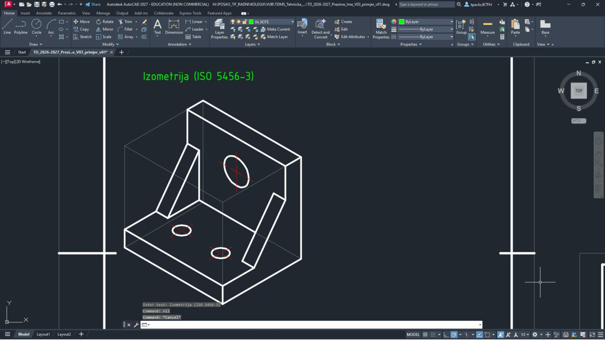
Dvije elipse Ø6,6 u bazi, veća elipsa Ø12,5 u uspravnom dijelu, crvene osi i natpis „Izometrija (ISO 5456-3)“.
Može i drukčije: uključi izometrijsko crtanje (ISODRAFT) i u ELLIPSE odaberi Isocircle. Ovdje je zadano točnim točkama da svi dobiju isto.
JKosa projekcija
15
Desno nacrtaj isti nosač u kosoj projekciji: prednja ploha u pravoj veličini, a dubina pod 45° skraćena na pola. Najprije obris (sloj 01_VIDLJIVO):
| # | Sloj | Naredba | Što upisuješ |
|---|---|---|---|
| 1 | 01_VIDLJIVO | LINE | 122,142 → 172,142 |
| 2 | 01_VIDLJIVO | LINE | 172,142 → 186.1421,156.1421 |
| 3 | 01_VIDLJIVO | LINE | 122,142 → 122,150 |
| 4 | 01_VIDLJIVO | LINE | 172,142 → 172,150 |
| 5 | 01_VIDLJIVO | LINE | 122,150 → 172,150 |
| 6 | 01_VIDLJIVO | LINE | 122,150 → 127.6569,155.6569 |
| 7 | 01_VIDLJIVO | LINE | 172,150 → 177.6569,155.6569 |
| 8 | 01_VIDLJIVO | LINE | 186.1421,156.1421 → 186.1421,164.1421 |
| 9 | 01_VIDLJIVO | LINE | 139.3137,161.3137 → 172.8137,161.3137 |
| 10 | 01_VIDLJIVO | LINE | 133.3137,183.3137 → 133.3137,198.3137 |
| 11 | 01_VIDLJIVO | LINE | 183.3137,183.3137 → 183.3137,198.3137 |
| 12 | 01_VIDLJIVO | LINE | 133.3137,198.3137 → 183.3137,198.3137 |
| 13 | 01_VIDLJIVO | LINE | 136.1421,201.1421 → 186.1421,201.1421 |
| 14 | 01_VIDLJIVO | LINE | 133.3137,198.3137 → 136.1421,201.1421 |
| 15 | 01_VIDLJIVO | LINE | 183.3137,198.3137 → 186.1421,201.1421 |
| 16 | 01_VIDLJIVO | LINE | 186.1421,164.1421 → 186.1421,201.1421 |
| 17 | 01_VIDLJIVO | LINE | 127.6569,155.6569 → 133.6569,155.6569 |
| 18 | 01_VIDLJIVO | LINE | 127.6569,155.6569 → 133.3137,183.3137 |
| 19 | 01_VIDLJIVO | LINE | 133.6569,155.6569 → 139.3137,183.3137 |
| 20 | 01_VIDLJIVO | LINE | 133.3137,183.3137 → 139.3137,183.3137 |
| 21 | 01_VIDLJIVO | LINE | 171.6569,155.6569 → 177.6569,155.6569 |
| 22 | 01_VIDLJIVO | LINE | 171.6569,155.6569 → 177.3137,183.3137 |
| 23 | 01_VIDLJIVO | LINE | 177.6569,155.6569 → 183.3137,183.3137 |
| 24 | 01_VIDLJIVO | LINE | 177.3137,183.3137 → 183.3137,183.3137 |
| 25 | 01_VIDLJIVO | LINE | 133.6569,155.6569 → 139.3137,161.3137 |
| 26 | 01_VIDLJIVO | LINE | 139.3137,161.3137 → 139.3137,183.3137 |
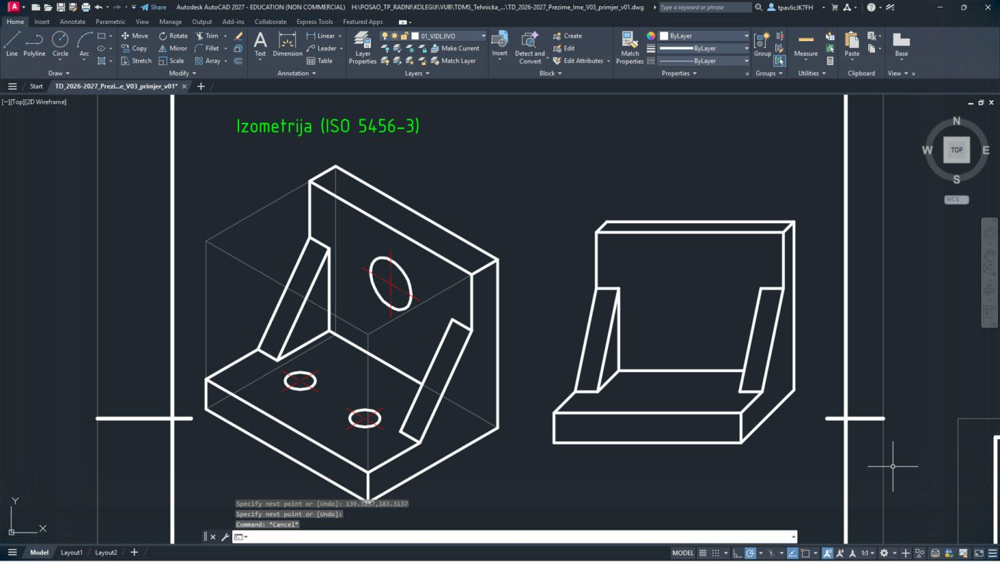
Nosač gledan sprijeda: širina 50 mm vodoravno, dubina koso prema gore-desno.
16
Provrti i naslov: u bazi su provrti elipse (skraćena dubina), a provrt u uspravnom dijelu je prava kružnica jer leži u prednjoj ravnini.
| # | Sloj | Naredba | Što upisuješ |
|---|---|---|---|
| 1 | 01_VIDLJIVO | ELLIPSE | C, središte 141.9497,154.9497, kraj prve osi 145.4474,155.3803, pola druge osi 1.0926 |
| 2 | 03_OSI | LINE | 136.1497,154.9497 → 147.7497,154.9497 |
| 3 | 03_OSI | LINE | 139.8991,152.8991 → 144.0004,157.0004 |
| 4 | 01_VIDLJIVO | ELLIPSE | C, središte 161.9497,154.9497, kraj prve osi 165.4474,155.3803, pola druge osi 1.0926 |
| 5 | 03_OSI | LINE | 156.1497,154.9497 → 167.7497,154.9497 |
| 6 | 03_OSI | LINE | 159.8991,152.8991 → 164.0004,157.0004 |
| 7 | 01_VIDLJIVO | CIRCLE | središte 158.3137,183.3137, polumjer 6.25 |
| 8 | 03_OSI | LINE | 149.3137,183.3137 → 167.3137,183.3137 |
| 9 | 03_OSI | LINE | 158.3137,174.3137 → 158.3137,192.3137 |
| 10 | 04_KOTE | TEXT | točka 124,225, visina 3.5, kut 0, tekst Kosa projekcija, dubina 45%%d \U+00D7 0,5 |
17
Cijeli list 1:
ZOOM Enter W Enter -5,-5 Enter 215,300 Enter.Upiši:
ZOOM Enter W Enter -5,-5 Enter 215,300 Enter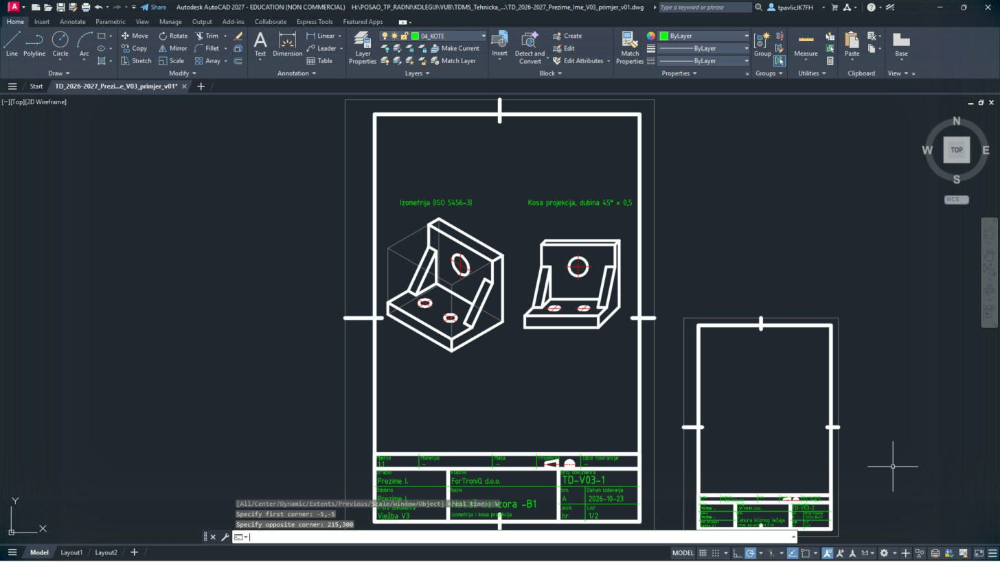
Lijevo izometrija, desno kosa projekcija, s naslovima; dolje zaglavlje lista 1/2.
KList 2 – čahura: osi i obris (mjerilo 2:1)
18
Čahura kliznog ležaja (prirubnica Ø40 × 6, tijelo Ø22, duljina 30, provrt Ø12 H7) crta se u stvarnoj veličini na malom listu. Upiši
QSAVE Enter, CELTSCALE Enter 0.5 Enter, pa približi: ZOOM Enter W Enter 238,48 Enter 332,140 Enter.Upiši:
QSAVE Enter CELTSCALE Enter 0.5 Enter ZOOM Enter W Enter 238,48 Enter 332,140 EnterCELTSCALE 0.5 je potreban zbog ispisa 2:1 – inače bi crtice bile dvostruko dulje (kao u V2).
19
Osi i obris prvog pogleda (puni presjek):
| # | Sloj | Naredba | Što upisuješ |
|---|---|---|---|
| 1 | 03_OSI | LINE | 244,110 → 280,110 |
| 2 | 03_OSI | LINE | 245,125.5 → 255,125.5 |
| 3 | 03_OSI | LINE | 245,94.5 → 255,94.5 |
| 4 | 03_OSI | LINE | 262,114.5 → 262,123.5 |
| 5 | 01_VIDLJIVO | PLINE | 247,90 → 247,130 → 253,130 → 253,121 → 277,121 → 277,99 → 253,99 → 253,90 → C |
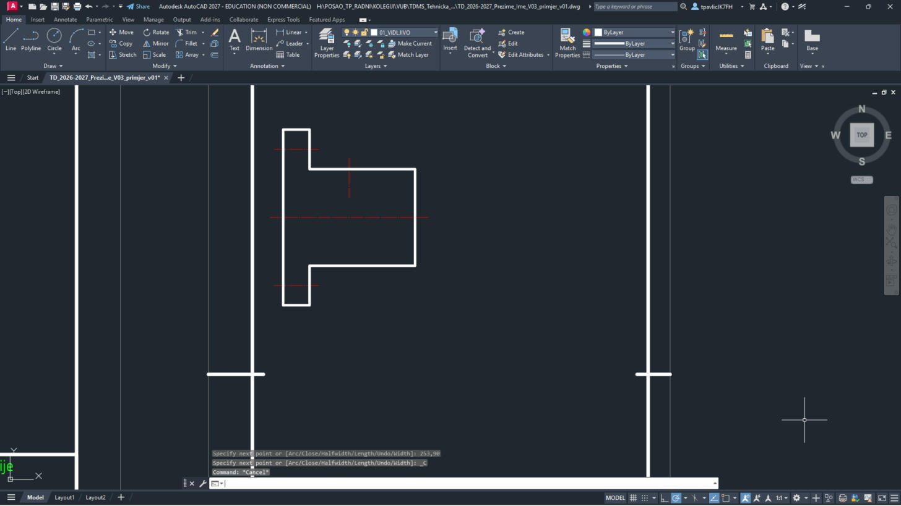
Obris čahure u obliku slova T (prirubnica lijevo), crvena os čahure, osi provrta Ø4,5 u prirubnici i os radijalnog provrta Ø3.
LList 2 – puni presjek: bridovi iza rezne ravnine
20
U presjeku se vide provrt Ø12 sa skošenjima, utor za mazivo Ø15, radijalni provrt Ø3 i provrti Ø4,5 u prirubnici:
| # | Sloj | Naredba | Što upisuješ |
|---|---|---|---|
| 1 | 01_VIDLJIVO | PLINE | 247,116.5 → 247.5,116 → 260,116 → 260,117.5 → 264,117.5 → 264,116 → 276.5,116 → 277,116.5, Enter |
| 2 | 01_VIDLJIVO | LINE | 247,123.25 → 253,123.25 |
| 3 | 01_VIDLJIVO | LINE | 247,127.75 → 253,127.75 |
| 4 | 01_VIDLJIVO | PLINE | 247,103.5 → 247.5,104 → 260,104 → 260,102.5 → 264,102.5 → 264,104 → 276.5,104 → 277,103.5, Enter |
| 5 | 01_VIDLJIVO | LINE | 247,96.75 → 253,96.75 |
| 6 | 01_VIDLJIVO | LINE | 247,92.25 → 253,92.25 |
| 7 | 01_VIDLJIVO | LINE | 260.5,117.5 → 260.5,121 |
| 8 | 01_VIDLJIVO | LINE | 263.5,117.5 → 263.5,121 |
| 9 | 01_VIDLJIVO | LINE | 247.5,104 → 247.5,116 |
| 10 | 01_VIDLJIVO | LINE | 260,102.5 → 260,117.5 |
| 11 | 01_VIDLJIVO | LINE | 264,102.5 → 264,117.5 |
| 12 | 01_VIDLJIVO | LINE | 276.5,104 → 276.5,116 |
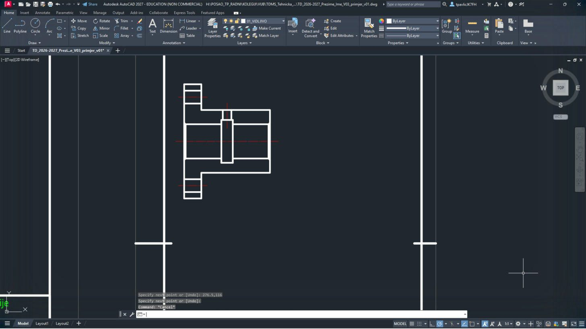
Unutrašnjost čahure je sada vidljiva punim crtama – nema više nevidljivih bridova.
MList 2 – šrafura i oznaka presjeka
21
Presječeni materijal šrafiraš (sloj 05_SRAFURA). Naredba
-HATCH u naredbenom retku: P (svojstva) → uzorak ANSI31 → mjerilo 0.45 → kut 0 → W (nacrtaj granicu) → N (ne čuvaj granicu) → točke granice → C → Enter. Zadnji redak je natpis A-A.| # | Sloj | Naredba | Što upisuješ |
|---|---|---|---|
| 1 | 05_SRAFURA | -HATCH | P, ANSI31, mjerilo 0.45, kut 0, W, N, granica: 247,116.5 → 247,123.25 → 253,123.25 → 253,121 → 260.5,121 → 260.5,117.5 → 260,117.5 → 260,116 → 247.5,116 → C, na kraju Enter |
| 2 | 05_SRAFURA | -HATCH | P, ANSI31, mjerilo 0.45, kut 0, W, N, granica: 263.5,121 → 277,121 → 277,116.5 → 276.5,116 → 264,116 → 264,117.5 → 263.5,117.5 → C, na kraju Enter |
| 3 | 05_SRAFURA | -HATCH | P, ANSI31, mjerilo 0.45, kut 0, W, N, granica: 247,127.75 → 247,130 → 253,130 → 253,127.75 → C, na kraju Enter |
| 4 | 05_SRAFURA | -HATCH | P, ANSI31, mjerilo 0.45, kut 0, W, N, granica: 247,103.5 → 247,96.75 → 253,96.75 → 253,99 → 277,99 → 277,103.5 → 276.5,104 → 264,104 → 264,102.5 → 260,102.5 → 260,104 → 247.5,104 → C, na kraju Enter |
| 5 | 05_SRAFURA | -HATCH | P, ANSI31, mjerilo 0.45, kut 0, W, N, granica: 247,92.25 → 247,90 → 253,90 → 253,92.25 → C, na kraju Enter |
| 6 | 04_KOTE | TEXT | točka 257,134, visina 2.5, kut 0, tekst A-A |
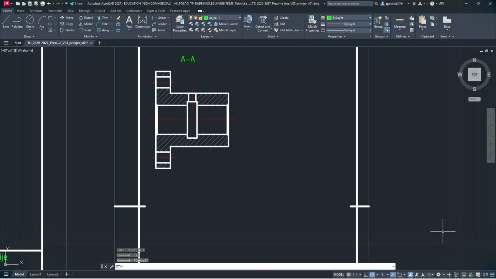
Kose crte (45°) samo na presječenom materijalu; provrt, utor i provrti ostaju prazni. Iznad pogleda piše A-A.
Ako šrafura ispadne preko provrta, točka granice je krivo upisana – Ctrl+Z i ponovi. Umjesto W možeš kliknuti unutar zatvorenog područja (Specify internal point) – tada je dovoljna jedna točka po području.
NList 2 – polupresjek
22
Desno nacrtaj istu čahuru u polupresjeku: gornja polovica u presjeku, donja u pogledu. Simetrala je granica.
| # | Sloj | Naredba | Što upisuješ |
|---|---|---|---|
| 1 | 03_OSI | LINE | 288,110 → 324,110 |
| 2 | 03_OSI | LINE | 289,125.5 → 299,125.5 |
| 3 | 03_OSI | LINE | 306,114.5 → 306,123.5 |
| 4 | 01_VIDLJIVO | PLINE | 321,110 → 321,121 → 297,121 → 297,130 → 291,130 → 291,90 → 297,90 → 297,99 → 321,99 → 321,110, Enter |
| 5 | 01_VIDLJIVO | PLINE | 291,116.5 → 291.5,116 → 304,116 → 304,117.5 → 308,117.5 → 308,116 → 320.5,116 → 321,116.5, Enter |
| 6 | 01_VIDLJIVO | LINE | 291,123.25 → 297,123.25 |
| 7 | 01_VIDLJIVO | LINE | 291,127.75 → 297,127.75 |
| 8 | 01_VIDLJIVO | LINE | 304.5,117.5 → 304.5,121 |
| 9 | 01_VIDLJIVO | LINE | 307.5,117.5 → 307.5,121 |
| 10 | 01_VIDLJIVO | LINE | 291.5,110 → 291.5,116 |
| 11 | 01_VIDLJIVO | LINE | 304,110 → 304,117.5 |
| 12 | 01_VIDLJIVO | LINE | 308,110 → 308,117.5 |
| 13 | 01_VIDLJIVO | LINE | 320.5,110 → 320.5,116 |
| 14 | 05_SRAFURA | -HATCH | P, ANSI31, mjerilo 0.45, kut 0, W, N, granica: 291,116.5 → 291,123.25 → 297,123.25 → 297,121 → 304.5,121 → 304.5,117.5 → 304,117.5 → 304,116 → 291.5,116 → C, na kraju Enter |
| 15 | 05_SRAFURA | -HATCH | P, ANSI31, mjerilo 0.45, kut 0, W, N, granica: 307.5,121 → 321,121 → 321,116.5 → 320.5,116 → 308,116 → 308,117.5 → 307.5,117.5 → C, na kraju Enter |
| 16 | 05_SRAFURA | -HATCH | P, ANSI31, mjerilo 0.45, kut 0, W, N, granica: 291,127.75 → 291,130 → 297,130 → 297,127.75 → C, na kraju Enter |
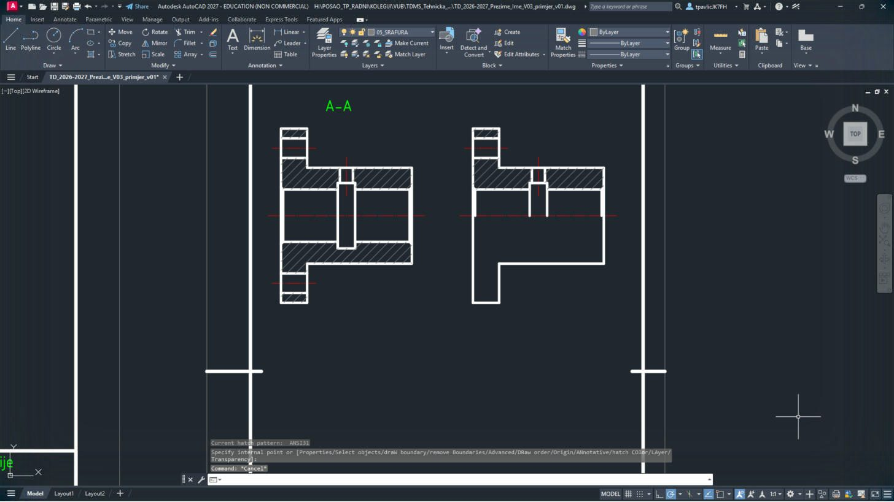
Gornja polovica šrafirana s unutrašnjošću, donja polovica samo obris (bez nevidljivih bridova).
OList 2 – djelomični presjek
23
Ispod nacrtaj kraj vodilice PS1-01-005 s djelomičnim presjekom navojne rupe. Granica presjeka je prostoručna crta (sloj 04_KOTE).
| # | Sloj | Naredba | Što upisuješ |
|---|---|---|---|
| 1 | 04_KOTE | PLINE | 262,68 → 261.2,66.5 → 262.6,64.5 → 261.4,62.5 → 262.7,60.5 → 261.5,58.5 → 262.6,57 → 262,56, Enter |
| 2 | 01_VIDLJIVO | PLINE | 262,68 → 301.5,68 → 302,67.5 → 302,56.5 → 301.5,56 → 262,56, Enter |
| 3 | 03_OSI | LINE | 259,62 → 305,62 |
| 4 | 04_KOTE | PLINE | 283,68 → 281.8,66 → 283.2,64 → 281.6,62 → 283,60 → 281.7,58 → 283,56, Enter |
| 5 | 01_VIDLJIVO | PLINE | 302,64.1 → 287,64.1 → 285.7876,62 → 287,59.9 → 302,59.9, Enter |
| 6 | 01_VIDLJIVO | LINE | 287,64.1 → 287,59.9 |
| 7 | 01_VIDLJIVO | LINE | 290,64.5 → 290,59.5 |
| 8 | 04_KOTE | LINE | 290,64.5 → 302,64.5 |
| 9 | 04_KOTE | LINE | 290,59.5 → 302,59.5 |
| 10 | 05_SRAFURA | -HATCH | P, ANSI31, mjerilo 0.45, kut 0, W, N, granica: 283,68 → 301.5,68 → 302,67.5 → 302,56.5 → 301.5,56 → 283,56 → 281.7,58 → 283,60 → 281.6,62 → 283.2,64 → 281.8,66 → C ; 302,64.1 → 287,64.1 → 285.7876,62 → 287,59.9 → 302,59.9 → C, na kraju Enter |
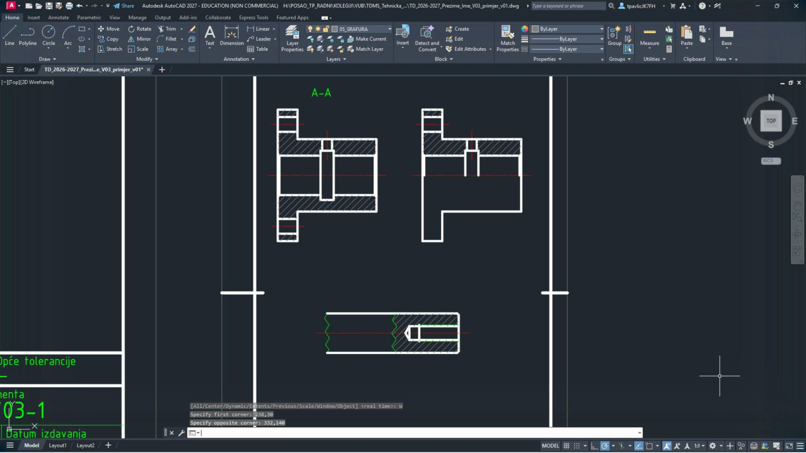
Vodilica s valovitom crtom prekida lijevo, a desno izrezan dio sa šrafurom i navojnom rupom.
Šrafura s dvije granice: prvo vanjska (→ C), zatim unutarnja rupa (→ C), tek onda Enter. Tako rupa ostane bez šrafure.
PList 2 – zaglavlje
24
Približi zaglavlje:
ZOOM Enter, W Enter, 237.5,2.5 Enter, 332.5,30 Enter. Upiši TEXTEDIT Enter i promijeni tekstove (klik na tekst → upiši novi → Enter; na kraju Esc):Upiši:
ZOOM Enter W Enter 237.5,2.5 Enter 332.5,30 Enter TEXTEDIT Enter| Polje | Sada piše (kopija lista 1) | Upiši |
|---|---|---|
| Mjerilo | 1:1 | 2:1 |
| Materijal | – | CuSn (čahura) |
| Opće tolerancije | – | ISO 2768-m |
| Naziv | Nosač senzora -B1 | Čahura kliznog ležaja |
| ispod naziva | izometrija i kosa projekcija | presjeci; kraj vodilice PS1-01-005 |
| Broj dokumenta | TD-V03-1 | TD-V03-2 |
| List | 1/2 | 2/2 |
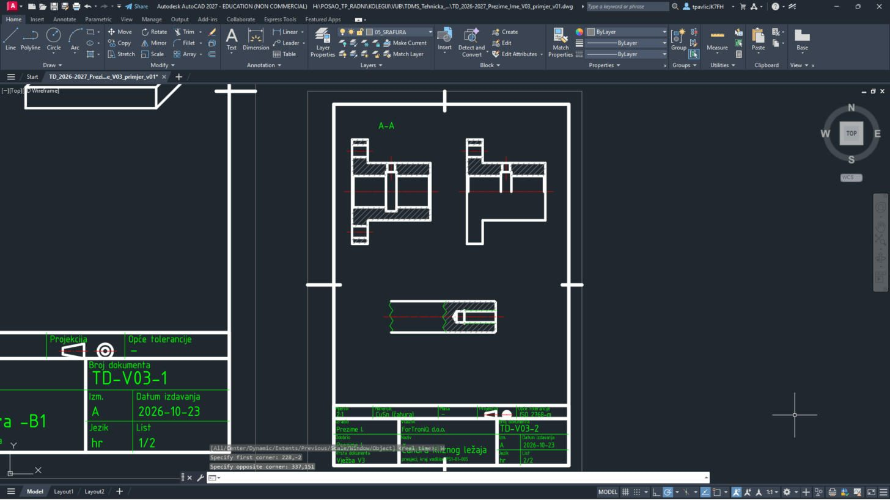
Klikni točno na crtu slova. Crticu – možeš upisati i kao običnu crticu
-.RIspis u PDF
25
Pritisni Ctrl + P. Postavke iz V1 su zapamćene (DWG To PDF.pc3, ISO full bleed A4, Window, Center the plot, monochrome.ctb). Za svaki list klikni Window< i upiši njegova dva kuta iz tablice.


26
Namjesti Scale prema tablici, klikni OK i spremi PDF pod imenom iz tablice.
| List | Window – prvi kut | Window – drugi kut | Scale | Ime PDF-a |
|---|---|---|---|---|
| 1 – izometrija i kosa projekcija | 0,0 | 210,297 | 1:1 | TD_2026-2027_Prezime_Ime_V03_L1 |
| 2 – čahura u presjecima | 230,0 | 335,148.5 | 2:1 | TD_2026-2027_Prezime_Ime_V03_L2 |


27
Za list u mjerilu 2:1 otvori popis Scale i odaberi 2:1.
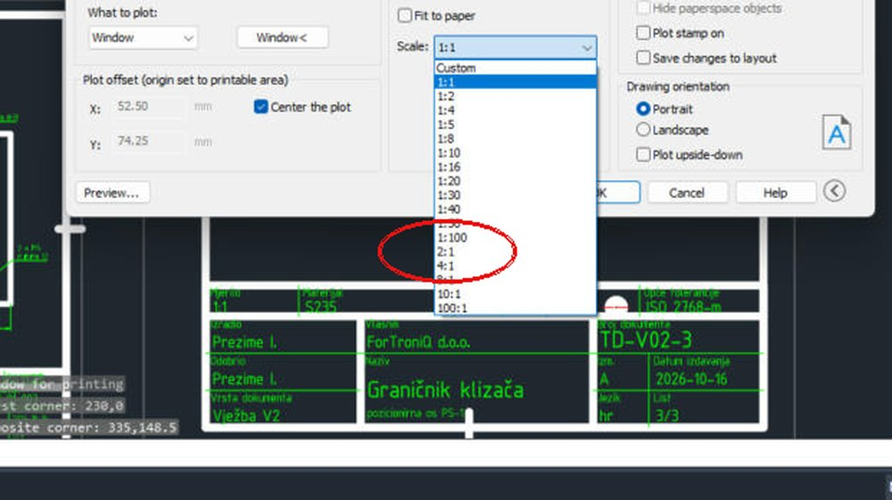

28
Ako se javi upozorenje The annotation scale is not equal to the plot scale, klikni Continue. Za listove 1:1 vrati Scale na 1:1.

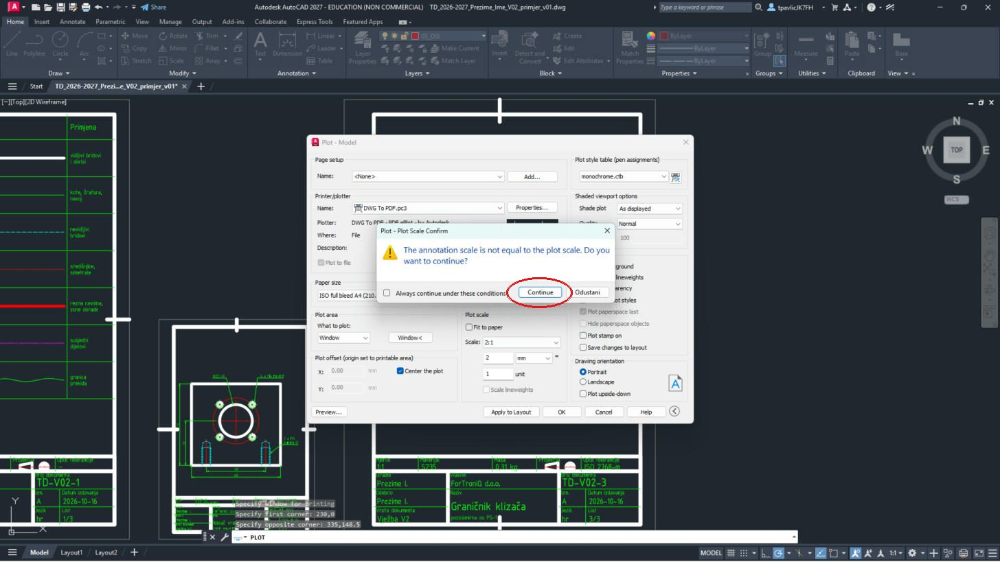
ZSpremi, vrati postavke i predaj
29
Vrati postavke:
DYNMODE → 3, OSMODE → 4133, GRIDMODE → 1; zatim QSAVE Enter.Upiši:
DYNMODE Enter 3 Enter OSMODE Enter 4133 Enter GRIDMODE Enter 1 Enter QSAVE Enter30
U sustavu za predaju, u zadaći za V3, predaj
TD_2026-2027_Prezime_Ime_V03.dwg i …_L1.pdf, …_L2.pdf, uz ispunjen radni list.Prije predaje otvori svaki PDF i usporedi ga sa slikom na vrhu upute.